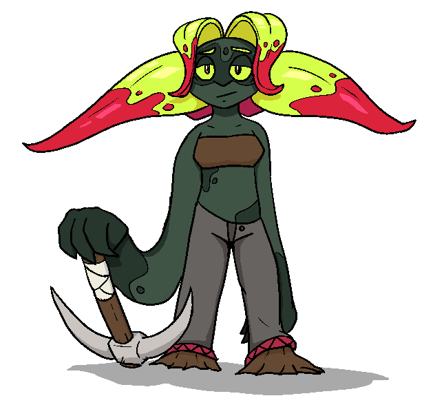

Pitch
Pitch | |
|---|---|
|

| |
| Full Name | Pitch |
| Pronouns | She/Her |
| Species | Deepfae |
| Age | 33 |
| Height | 127 cm / 4'2" |
| Occupation | Tunnel Digger |
| Relationships |
Root - Roommate & Crush Candy - "Friend" |
| Favorite Bug | Pillbug |
| Paid Overtime | Nope |
Backstory
Pitch was born and raised in the Deep Underground, where the master of her family ran a small bookshop that dealt in native and foreign texts. She fell in love with a tattered set of comic books from the surface, which eventually lead to her picking up a rudimentary understanding of surface languages.
When she was older, she made the decision to immigrate from the Deep Undergound to the higher levels, due to labor disputes and political instability growing in the deep. Her bilinguality gave her an advantage in the process, and she was able to take advantage of a program that helped get her set up and guided her through the miles of underground tunnel to the higher underground.
She picked up a job as a tunnel worker, digging new tunnels and maintaining existing ones. It was temporary work while she got settled, and it worked her hard, but she could live with it.
But, she found it difficult to find anything else that she could do. Tunnel-whisper translators weren't in high demand - and her strong accent and lack of formal education drove the few oppritunities that did exist away. So, she kept digging tunnels.
The company took up more contracts, and her hours went up, but her pay didn't.
And she kept digging tunnels.
Weeks turned into months.
And she kept digging tunnels.
She tried looking for anything else, but she was already living paycheck to paycheck, and barely had the time.
And she kept digging tunnels.
...
Eventually, the company got a contract that would have required Pitch to commute an hour to the worksite. Given she didn't have many possessions at the time anyways, she opted to move closer. Her limited budget limited her options, and she almost couldn't find anything until she saw a listing for someone seeking a roommate. Only caveat - it was on the surface.
Not seeing much of a choice, she took the offer, and moved in with Root.
And she kept digging tunnels.
But maybe she'd be able to stop, soon. She hoped she would.
Character
Pitch is tired, desperate, but trying her best. Her early life was full of enthusiasm and wonder, something she's had worn down over time as the reality of life has set in. Still, she wants to be able to be like that, again. Partially due to her situation, she has an short fuse and can be quick to lash out. She doesn't appreciate having her time wasted.
Outside of her job, Pitch loves bugs - she hopes to one day get one of the giant bugs native to the underground as a pet.
She's also something of a hopeless romantic. Partially due to her lack of time, partially awkwardness, she has yet to pursue an actual relationship. She has found herself wanting to ask Root out, though.
Generally, Pitch has no shame or reservations about herself or her interests - she won't just bring it up out of nowhere, but she'll readily defend even the most niche or weird fixation of her. And she has some weird ones.
Trivia
- Pitch has intense agoraphobia, manifesting mostly as a fear of the sky on the surface. Even just looking at the sky makes her feel sick.
- Like other Deepfae, Pitch's skin is extremely uv sensitive and can burn on even an overcast day.
- Pitch likes pizza.
- Red beetles are her favorite topping.
- All fae are genderless by default, Pitch decided to go by she/her shortly before immigrating.